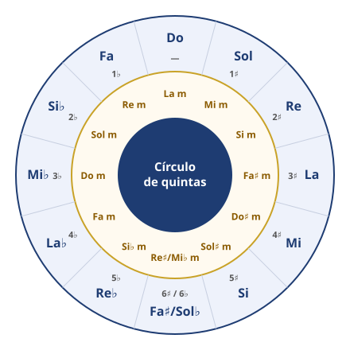
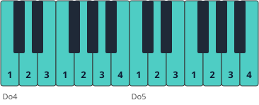
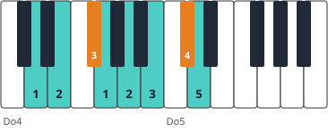

Módulo 3: Escalas en todas las tonalidades
La gimnasia diaria del pianista… y el mapa de la armonía.
Piano · Nivel intermedio · Módulo 3 de 14
Escalas: técnica y teoría a la vez
Las escalas desarrollan la igualdad de los dedos y el paso del pulgar, y te enseñan las tonalidades. El círculo de quintas las ordena: cada paso a la derecha añade un sostenido y cada paso a la izquierda, un bemol.

Tonalidades mayores (exterior), relativas menores (interior) y número de alteraciones de la armadura.
1. Do mayor, la referencia

Mano derecha: 1-2-3, pasa el pulgar, 1-2-3-4, pasa el pulgar… y el 5 solo en la nota final.
🎼 Escala de Do mayor · 2 octavas, manos juntas
Dedos: el pulgar «pasa por debajo» tras el 3.º y el 4.º dedo; los dedos largos «pasan por encima» al bajar.
2. Reglas de digitación
- 🖐️ El pulgar no toca teclas negras (salvo casos muy concretos).
- 🖐️ Los dedos se agrupan en 1-2-3 y 1-2-3-4: los grupos se ajustan para que los dedos largos caigan en las teclas negras.
- 🖐️ El pulgar pasa por debajo sin mover el codo; prepara el paso girando ligeramente el antebrazo.
- 🖐️ Estudia siempre manos separadas primero: los «pasos de pulgar» de cada mano no coinciden.

Re mayor: misma digitación que Do (1-2-3-1-2-3-4-5) porque Fa♯ y Do♯ caen en dedos largos.
3. Digitaciones estándar (una octava)
| Tonalidad | Mano derecha | Mano izquierda |
|---|---|---|
| Do, Sol, Re, La, Mi | 1 2 3 1 2 3 4 5 | 5 4 3 2 1 3 2 1 |
| Si | 1 2 3 1 2 3 4 5 | 4 3 2 1 4 3 2 1 |
| Fa | 1 2 3 4 1 2 3 4 | 5 4 3 2 1 3 2 1 |
| Si♭ | 4 1 2 3 1 2 3 4 | 3 2 1 4 3 2 1 3 |
| Mi♭ | 3 1 2 3 4 1 2 3 | 3 2 1 4 3 2 1 3 |
| La♭ | 3 4 1 2 3 1 2 3 | 3 2 1 4 3 2 1 3 |
| Re♭ | 2 3 1 2 3 4 1 2 | 3 2 1 4 3 2 1 3 |
| Fa♯ / Sol♭ | 2 3 4 1 2 3 1 2 | 4 3 2 1 3 2 1 4 |
Digitaciones de uso habitual en los métodos tradicionales; algunas ediciones proponen variantes.
4. Escalas menores
| Tipo | Fórmula (desde La) | Rasgo |
|---|---|---|
| Natural | La Si Do Re Mi Fa Sol La | Misma armadura que su relativa mayor (Do) |
| Armónica | La Si Do Re Mi Fa Sol♯ La | 7.º grado elevado: crea la sensible |
| Melódica | Sube con Fa♯ y Sol♯; baja como la natural | Suaviza el salto de la armónica |
🎼 Escala de La menor armónica · 1 octava, manos juntas
El 7.º grado elevado (Sol♯) crea la sensible y el intervalo característico de 2.ª aumentada Fa–Sol♯.
🧩 ¿Qué alteración caracteriza a la escala de La menor armónica?
🧩 ¿Cuántas alteraciones tiene la armadura de Re mayor?
📥 Partituras para imprimir: todas las del curso están en el Cuaderno de partituras (PDF).
Resumen: círculo de quintas, pulgar fuera de las teclas negras, manos separadas primero y las tres formas de la escala menor.